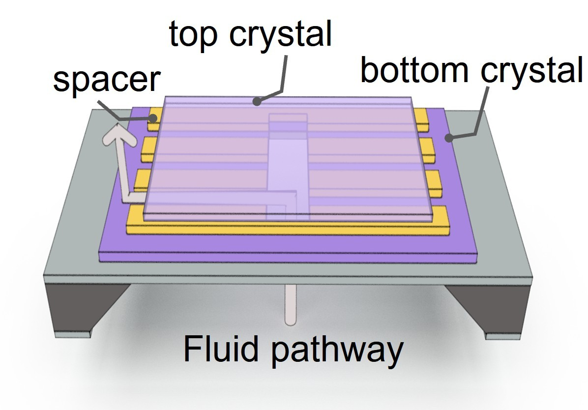
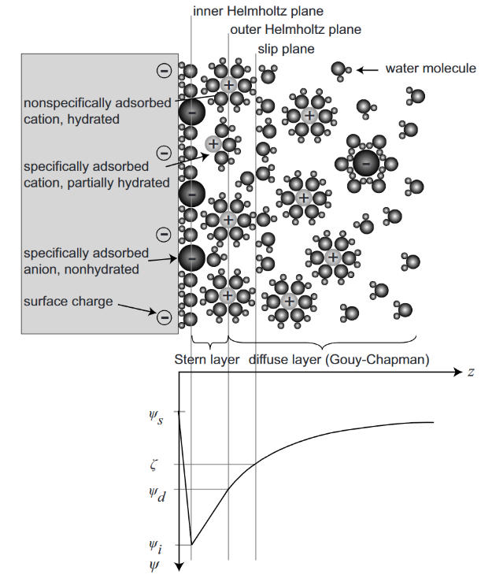
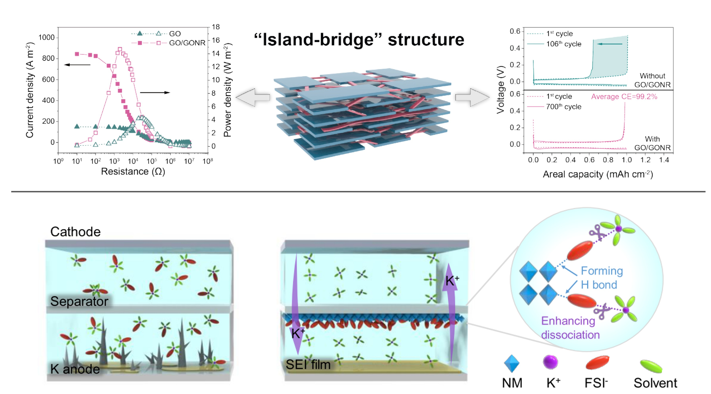
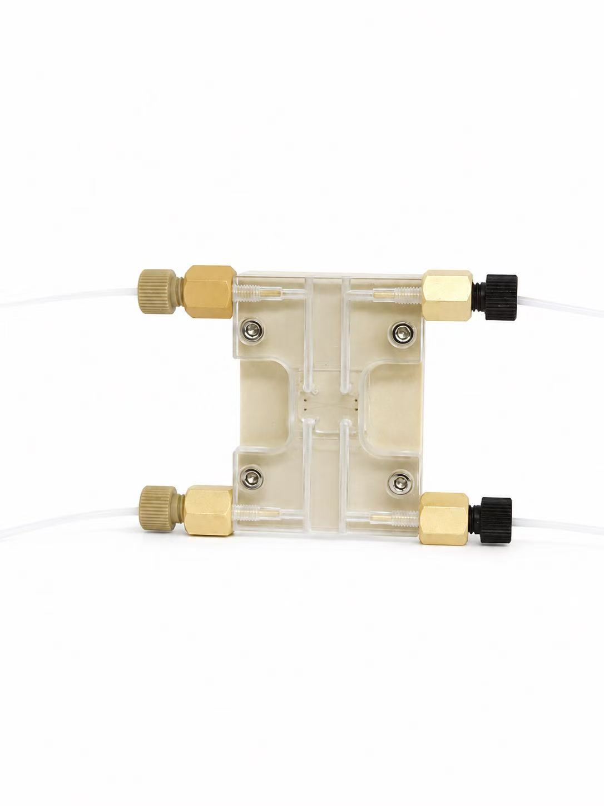
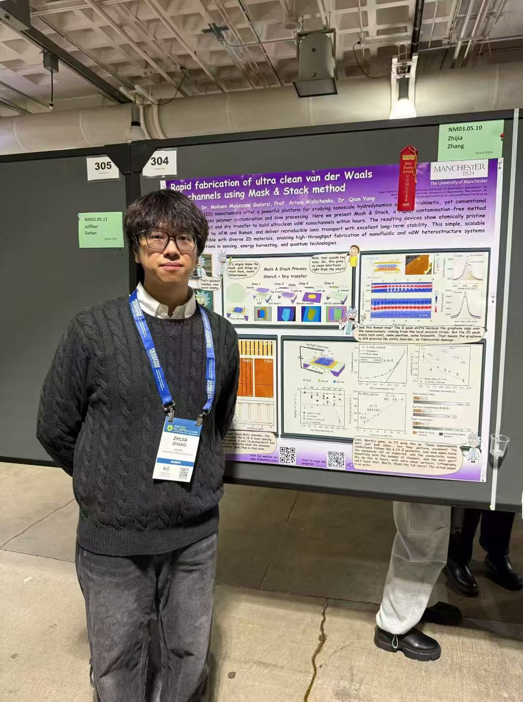
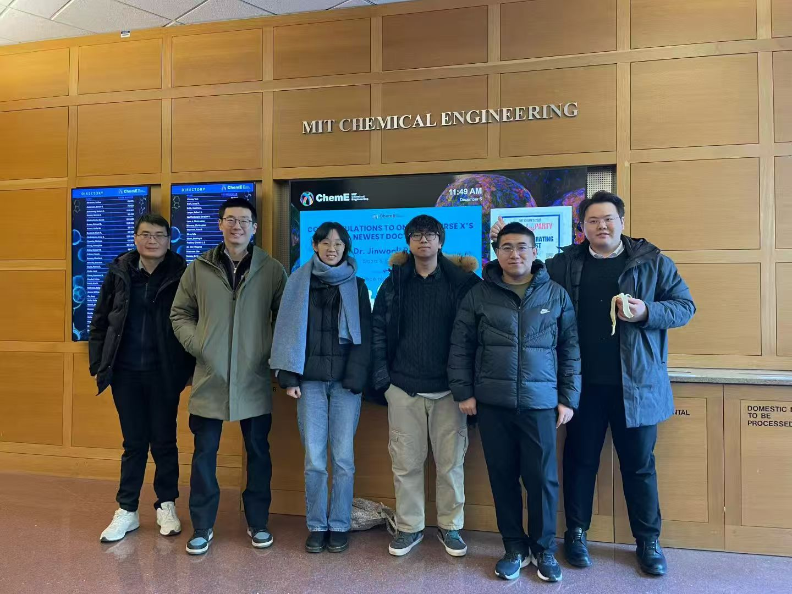
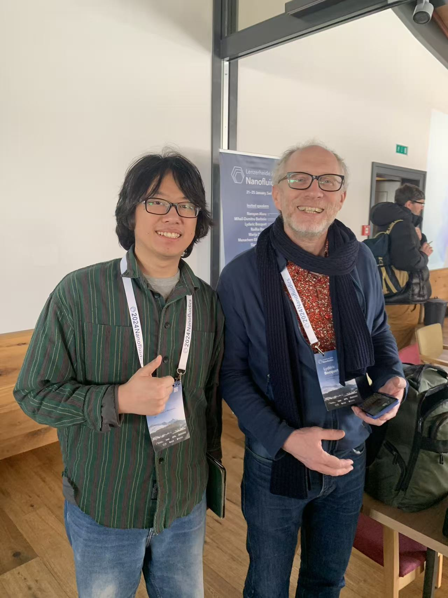
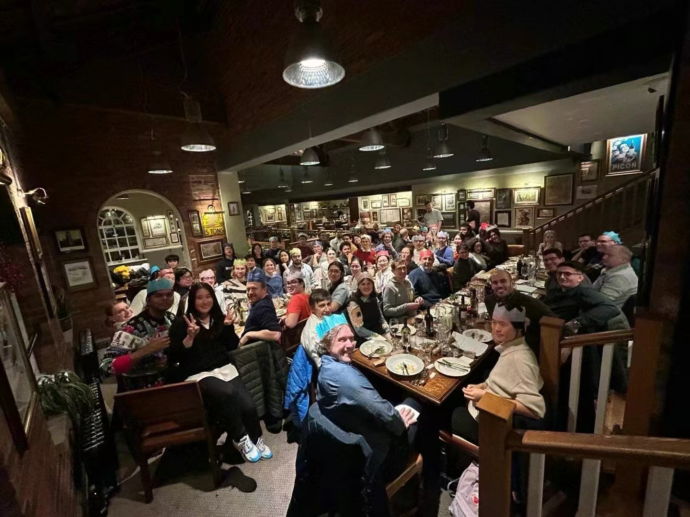

2D Nanochannels
Studying ion transport, surface-charge effects, and electrolyte behavior in angstrom- to nanometre-scale slits.
Nanoscale interfaces · Ion transport · Electrochemistry
I am Zhijia Zhang, a PhD student in condensed matter physics at The University of Manchester, working on nanofluidics, two-dimensional materials, and interfacial electrochemistry.
My research combines van der Waals device fabrication, ionic transport measurements, and electrochemical processes to understand how Nanoconfinement reshape ion transport and chemical reactions.

I focus on transport phenomena emerging from extreme confinement, clean two-dimensional interfaces, and coupled mechanical–electrochemical environments.
Studying ion transport, surface-charge effects, and electrolyte behavior in angstrom- to nanometre-scale slits.

Clean assembly of 2D heterostructures and nanofluidic devices

Exploring charge regulation, electrode effects, metal growth, and confined electrochemical reactions at nanoscale interfaces.

Osmotic energy conversion and Secondary battery systems
Rapid fabrication of clean van der Waals nanochannels using Mask and Stack method
arXiv preprint arXiv:2511.18480
Architecting mechanosensitive nanofluidic transport in graphite nanoslits
Science Advances, 2026, 12, 12,eaed4451
Silver Electrodeposition from Ag/AgCl Electrodes: Implications for Nanoscience
Nano Letters, 2025, 25, 9427–9432
External-pressure–electrochemistry coupling in solid-state lithium metal batteries
Nature Reviews Materials, 2024, 9, 305–320
Polyolefin-Based Separator with Interfacial Chemistry Regulation for Robust Potassium Metal Batteries
Angewandte Chemie International Edition, 2023, 62, e2023063
Vacancy Engineering for High-Efficiency Nanofluidic Osmotic Energy Generation
Journal of the American Chemical Society, 2023, 145, 2669–2678
Biomimetic Dendrite-Free Multivalent Metal Batteries
Advanced Materials, 2022, 34, 2206970
Cellulose-based material in lithium-sulfur batteries: A Review
Carbohydrate Polymers, 2021, 255, 117469
Research images, device snapshots, and a few moments outside the lab. Serious science, but not every pixel needs to wear a lab coat.

Custom-fabricated microchannel substrates for nanofluidic devices
2026.08

MRS conference in Boston
2025.11

Visiting MIT lab
2025.11

First time meeting Professor Lydéric at the Nanofluidics Conference in Switzerland
2024.1

Christmas dinner with the Condensed Matter Physics group
2023.12
Jan 2023 – Present
PhD Researcher in Condensed Matter Physics
The University of Manchester, UK
Nanofluidics, ionic transport, and van der Waals nanochannels
Sep 2018 – Jun 2021
M.A.Sc. in Chemistry
Wuhan University of Technology, China
Secondary battery systems, including lithium–sulfur and zinc-ion batteries
Sep 2014 – Jun 2018
B.S. in Applied Chemistry
Wuhan University of Technology, China
Applied Chemistry
Jul 2021 – Dec 2022
Research Assistant
Tsinghua Shenzhen International Graduate School, China
Research on electrochemical energy materials and battery systems
I am interested in nanofluidics, two-dimensional materials, interfacial electrochemistry, and clean device fabrication. For academic discussions or collaboration, feel free to get in touch.
University Email: zhijia.zhang@postgrad.manchester.ac.uk
Gmail: zhijia.zhang1112@gmail.com
Location: Schuster Building, The University of Manchester, Manchester, United Kingdom
© Zhijia Zhang